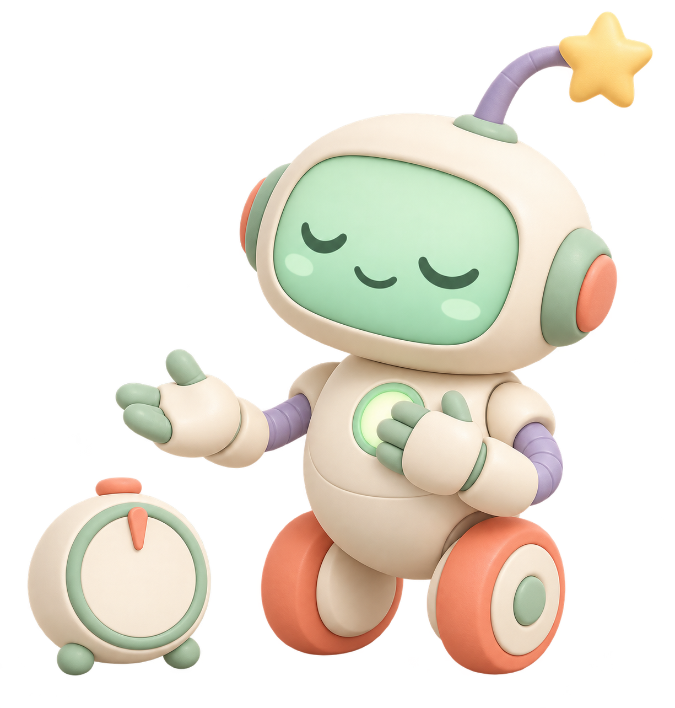

A respectful explanation
The task can be small and still feel enormous.
ADHD can affect task initiation, working memory, sequencing, sensory load, and recovery after a mistake. Trying your best does not guarantee that another person will react calmly to a small missed detail. That reaction is not under your control.

Pause is informationThe load map
A calm interface reduces what has to be held in mind.
Starting
“Do the kitchen” can be too large to enter. The robot turns it into one visible first movement.
Remembering
A reminder can be gentle and specific. If the chore is forgotten, the teaching starts again without annoyance.
Sequencing
Order matters. The robot can keep the next step visible without demanding the whole sequence at once.
Sensory load
Noise, smell, clutter, and visual density can change the task. A quieter visual route leaves room to choose.
Recovery
One spill or missed detail does not need to become a household trial. Choose one safe repair and return.
Reteaching
Unlimited patience means a routine can be explained again, and again, without a scorecard.
You deserve a helper that stays calm.
Read the promise in full, including what the robot can never control.